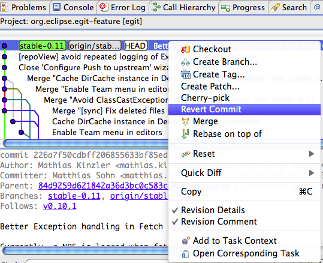
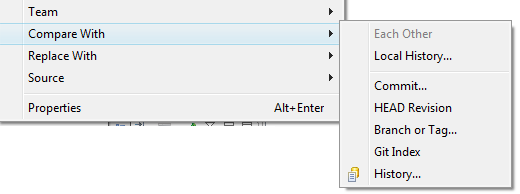
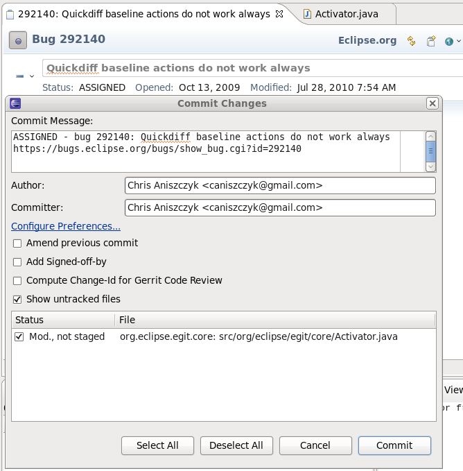
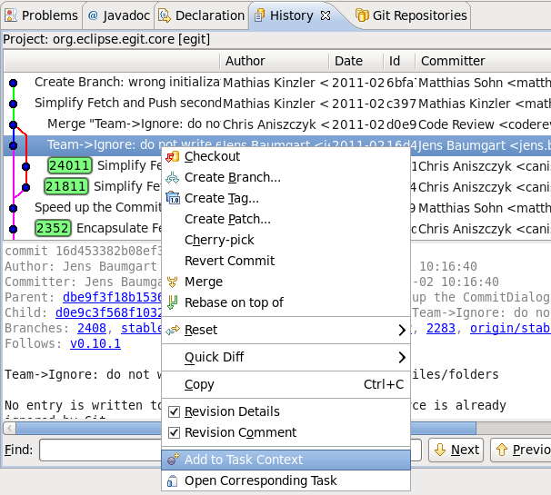

| EGit 0.11 New and Noteworthy | ||
|---|---|---|
|
|
||
| Bugs Closed | ||

A new wizard provides convenient fetching of changes from Gerrit
A couple of new actions ( Team > Push to Upstream and Team > Fetch from Upstream) allows to directly push to and fetch from the remote stored in the upstream configuration of the currently checked out branch without the need to go through a wizard each time.

Simplified Fetch and Push Wizards were implemented which also behave much closer to fetch and push in c git.





The commit dialog is now integrated with Mylyn to populate it with active task information.

The history view is integrated with Mylyn via the Add to Task Context or Open Corresponding Task actions

The following operations are now much faster:
|
|
||
| Bugs Closed |